Casetele de text pot fi utile pentru a atrage atenția asupra unui anumit text. Ele pot fi utile și atunci când trebuie să mutați textul în document.
Word vă permite să formatați casetele de text și textul din ele folosind o varietate de stiluri și efecte.
-
Selectați fila Inserare, apoi faceți clic pe comanda Text Box din grupul Text.
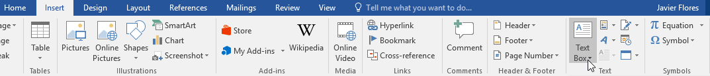
-
Va apărea un meniu derulant. Selectați Desenați caseta de text.
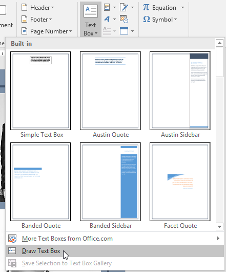
-
Faceți clic și trageți oriunde pe document pentru a crea caseta de text.
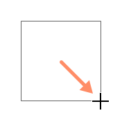
-
Punctul de inserare va apărea în interiorul casetei de text. Acum puteți tasta pentru a crea text în interiorul casetei de text.
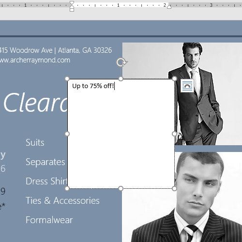
-
Dacă doriți, puteți selecta textul și apoi schimba fontul, culoarea și dimensiunea utilizând comenzile din filele Format și Acasă.
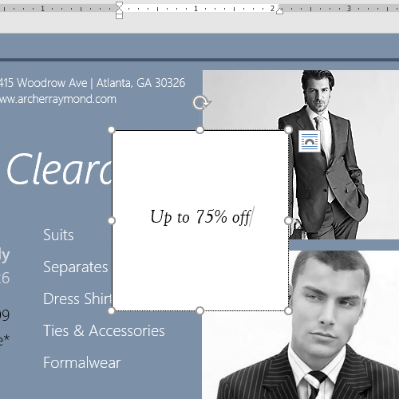
-
Faceți clic oriunde în afara casetei de text pentru a reveni la documentul dvs.
-
Faceți clic pe caseta de text pe care doriți să o mutați.
-
Treceți mouse-ul peste una dintre marginile casetei de text. Mouse-ul se va transforma într-o cruce cu săgeți.
-
Faceți clic și trageți caseta de text în locația dorită.
-
Faceți clic pe caseta de text pe care doriți să o redimensionați.
-
Faceți clic și trageți pe oricare dintre mânerele de dimensionare din colțurile sau părțile laterale
ale casetei de text până când ajunge la dimensiunea dorită.
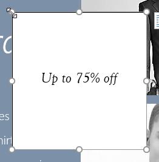
Word oferă mai multe opțiuni pentru modificarea modului în care casetele de text apar în documentul dvs.
Puteți modifica forma, stilul și culoarea casetelor de text sau puteți adăuga diverse efecte.
Alegerea unui stil de formă vă permite să aplicați culori și efecte prestabilite pentru a schimba rapid aspectul casetei de text.
-
Selectați caseta de text pe care doriți să o modificați.
-
În fila Format, faceți clic pe săgeata derulantă Mai multe din grupul Stiluri de formă.
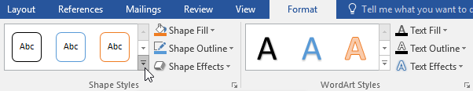
-
Va apărea un meniu derulant de stiluri. Selectați stilul pe care doriți să îl utilizați.
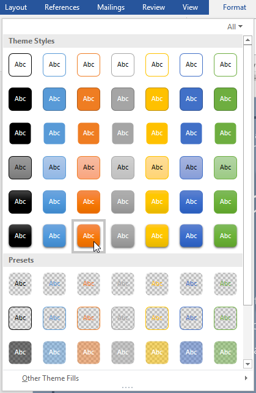
-
Caseta de text va apărea în stilul selectat.
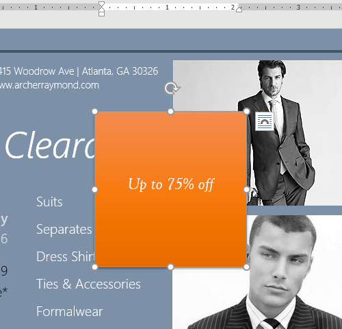
Modificarea formei unei casete de text poate fi o opțiune utilă pentru a crea un aspect interesant în documentul dvs.
-
Selectați caseta de text pe care doriți să o modificați. Va apărea fila Format.
-
Din fila Format, faceți clic pe comanda Editare formă.
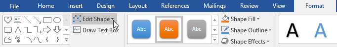
-
Treceți cu mouse-ul peste Modificare formă, apoi selectați forma dorită din meniul care apare.
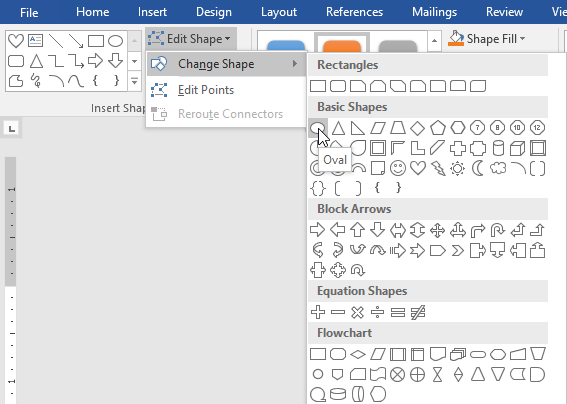
-
Caseta de text va apărea formatată ca formă.
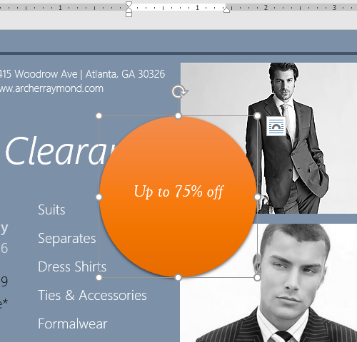